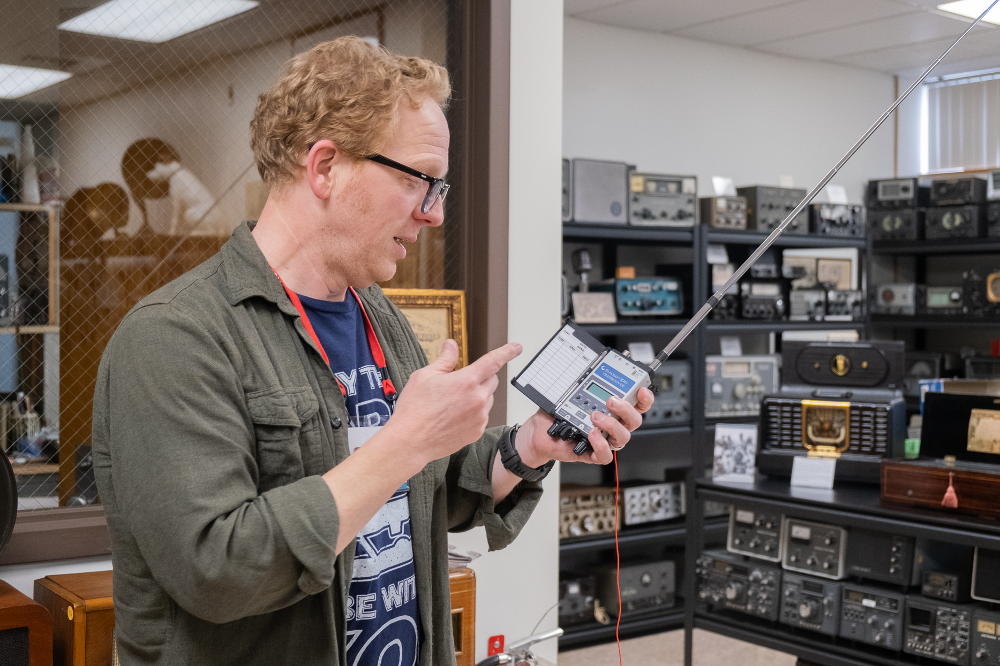
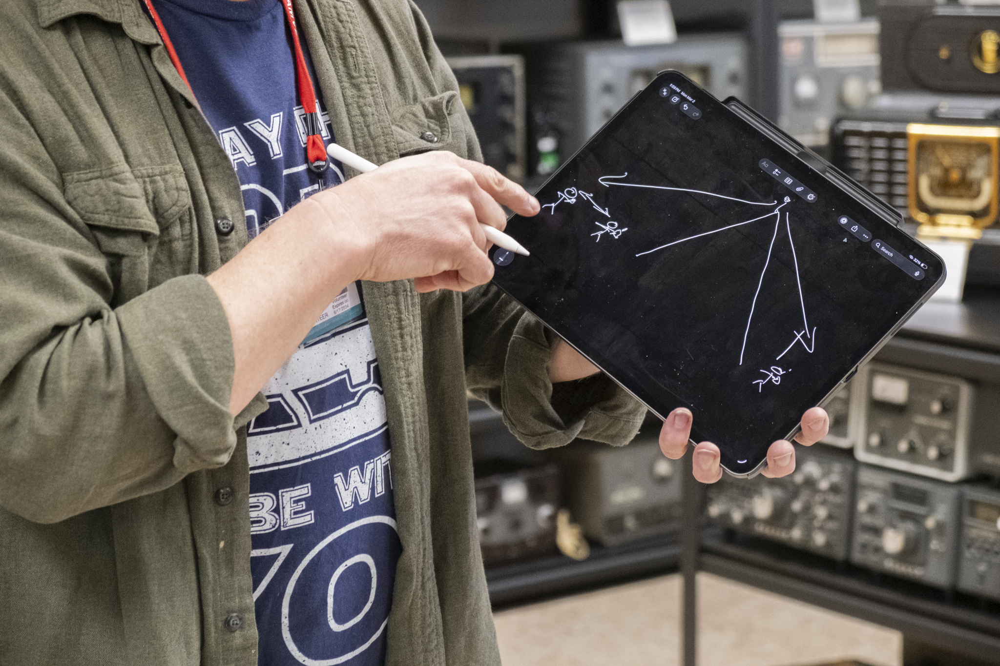
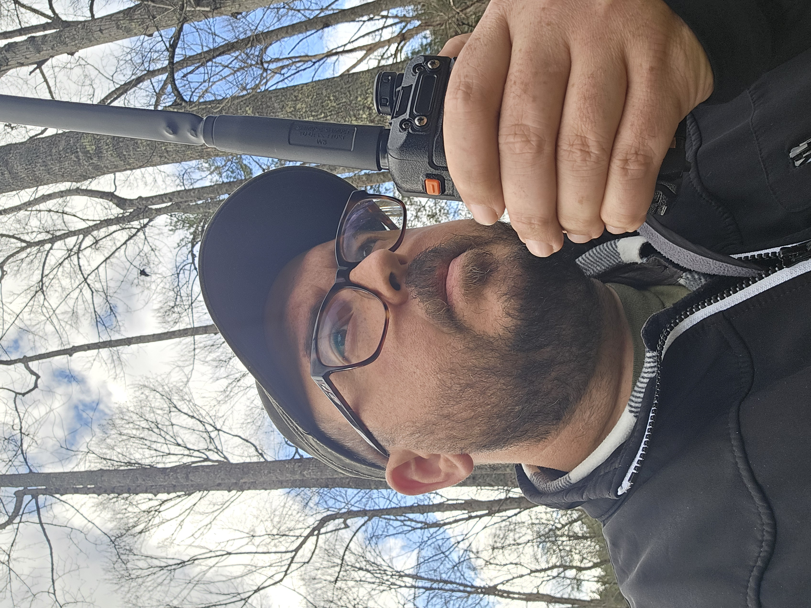
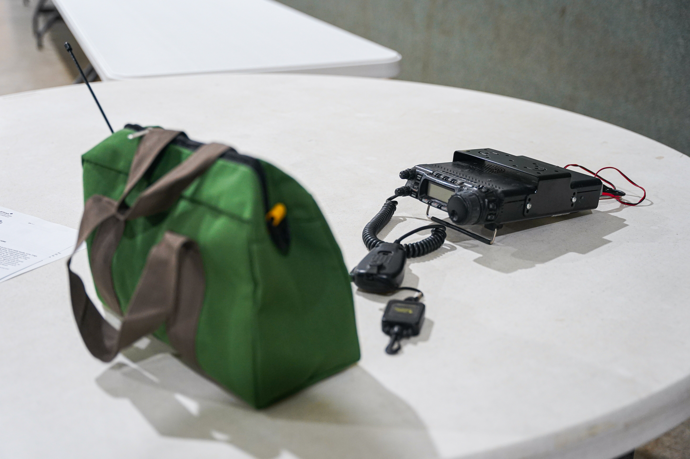
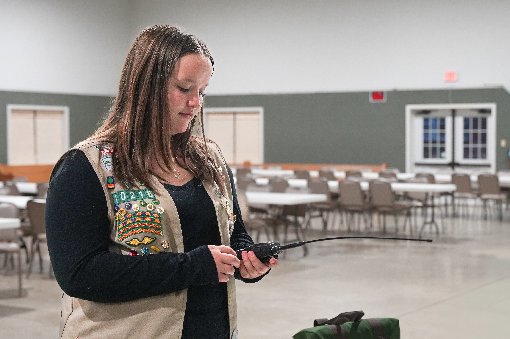

Tropical storm Helene created a massive communications blackout in Western North Carolina, killing internet and cell service for most of the 400,000+ people who live in the greater Asheville area. Even 911 was down. But for Thomas Witherspoon, 53, of Swannanoa, his ability to communicate during the storm was relatively unaffected.
There are a few reasons for that. Earlier that year, the Witherspoon family had upgraded to satellite internet. They'd also gotten solar panels, installed with a whole-house battery system that allowed them to keep their electricity and live completely off-grid. In the weeks after the storm, their house became an impromptu internet cafe for the neighborhood. They shared provisions, too, cooking for each other before the food went bad. "Our neighborhood was very self-sufficient," Witherspoon said with a glimmer of pride.
But it was his amateur "ham" radio that provided a critical connection to the outside world. One day, after a post-storm meeting with his neighbors, Witherspoon called the Mount Mitchell radio "repeater" –– a mountain-based station that extends the range of two-way radios by re-transmitting them at a higher power –– and requested the supplies the neighborhood needed from the local fire department. The next day they received a delivery of chainsaw chains, coffee and other essentials.
"Even though I had internet at the house," Witherspoon said, "who would you email for that? So having this was like having a direct connection to an entire emergency infrastructure."

Thomas Witherspoon shows off his equipment at the Asheville Radio Museum. Photo credit: Sydney Woogerd
Many Western North Carolinians were well-connected before the storm, though Census data shows that over 14% of Asheville residents still lacked access to broadband internet pre-Helene. But even those who had reliable connectivity faced a near-total blackout in the storm's immediate aftermath. According to North Carolina's Statewide Interoperability Coordinator Greg Hauser, who spoke at a Federal Communications Commission roundtable on July 7, 2025, over 1,700 miles of fiber optic cable was lost or destroyed during Hurricane Helene, and many of the region's cell towers were knocked over. Even three weeks after the storm, thousands of people still hadn't gotten their electricity back.
With power lines down and wifi cables damaged, it was the folks with a much older method of communicating – the amateur radio operators – who were able to bridge gaps and connect those in need of life-sustaining services.
"Radio is not something I thought much about until this storm," said Sara Nichols, energy and economic development manager at the Land of Sky Council, a multi-county local government organization based in Asheville, but it "was a saving grace for a lot of people." Those who had knowledge of and access to that technology were in a far better position than those who didn't. Plus, "having life skills is like an Appalachian dream, you know?" she said.
"Ham radios" are handheld, two-way radio devices with a speaker, microphone and antenna. They look similar to a walkie-talkie, but they allow for the use of repeaters. Since ham radios operate on high frequencies, which travel in straight lines and are easily stopped by obstacles, radio repeaters are usually placed on a mountain peak or atop a tower.
There's a finite amount of radio frequencies available with existing technologies, so it's licensed and regulated by the Federal Communications Commission. That means amateur users need to take a test and pay a fee to legally be allowed to use it. Ham radios operate on a vast spectrum of different bands, including HF (high frequency), VHF (very high frequency) and UHF (ultra high frequency).

Thomas Witherspoon draws a diagram of how a repeater allows radio traffic to traverse mountains. Photo credit: Sydney Woogerd
Amateur radio was born in the early 20th century, as advancements in wireless communication technology attracted scientists and hobbyists alike to experiment with it. During both world wars, radio usage for amateurs was banned or restricted, and hobbyists were sometimes called to apply those skills in service of the nation. As cellphones and the internet became more popular over the years, radio's popularity dwindled, and many municipal governments stopped investing in it.
"When decisions about investments were being made," Nichols explained, "they often were not made with the radio as the priority, because it wasn't where things were headed."
Another transmission method whose advantages were highlighted during Helene, called general mobile radio service or GMRS, operates on a more limited range of VHF and UHF bands but still allows the use of the repeater.
For Justin Hamel, a 41-year-old father and longtime amateur radio enthusiast based in Fairview, GMRS is a more accessible alternative to ham radio, which has a more intensive licensing process and a slightly less welcoming culture.
"There's a lot of typically older gentlemen in ham radio," Hamel said, "and they practice a lot of gatekeeping." But with GMRS, he said, it's "easy for normal people to use. I say normal in comparison to nerds like me."
Helene turned Hamel from a radio enthusiast to an evangelist. When the storm hit his neighborhood in a mountain cove of Fairview, he lost cell service, power and internet. The cell towers "were just kind of dropping like flies one by one," he said, "when either they were damaged, or they ran out of what I assume to be diesel generator backup." A landslide had also blocked his family's exit path, so they were trapped and otherwise cut off.
Hamel's mother lives in Houston, and he needed to find a way to let her know his family was OK. Luckily, he's had his ham radio license for over a decade. He called the Mount Mitchell repeater –– the same one Witherspoon contacted –– and they were able to contact his mother. "They said, 'no problem, we'll get back to you in about 5 minutes. Just stand by,'" Hamel said. A few minutes later, they called him back and let him know his mother was crying.
"She was so thankful to hear that we were OK," he said, "because from her perspective, seeing it on the news right after the storm, it was just all doom and gloom. There were no other positive stories yet, and nobody really knew what was going on on the ground other than it was just really bad."
Once he took care of his own family, he turned his attention outward to others who needed help. Hamel is vice president of his homeowner's association, and he stayed behind with a "skeleton crew" of neighbors to help clear debris. One of Hamel's other neighbors had fled to his second home and offered to bring supplies for them, asking what they needed.
"Please bring radios," Hamel told him. The neighbor brought a bunch of family radio service (FRS) radios, which Hamel said are the same kind you can buy at Walmart. They're low power and low range, and while they were better than nothing, they were far from ideal. The houses in Hamel's mountain cove are spaced far apart, so the lower power of the FRS devices couldn't connect everyone in the neighborhood.
"On a mountainside, with all that rough terrain, and just the distances we were trying to talk, it didn't work well," he recalled. "But it did get the neighbors interested in radio. They saw it as being a viable backup."
And that's all he needed to start thinking big about what he could next.


Caption to come.
The rise in amateur radio interest is especially significant, given that public communications resiliency has been so patchworked. There have been many improvements since the storm, but it's hard to get a sense of what is still down, said Nichols, of the Land of Sky Council.
Since Helene, Nichols has been attempting to map areas where broadband internet is still down, which is harder than one might think. "Broadband companies do not have to –– nor will they –– essentially show you the map of where the infrastructure is," she said. On top of that, "I am anecdotally aware that there are places that these providers did not build back because the infrastructure they had to those homes was never profitable." Without those clear maps about what communities are still not getting internet service, Nichols has had to find workarounds to get the data she needs.
In a draft communications resiliency plan Nichols wrote, which she hopes to present before the end of June, she writes that although public officials had thought systems were redundant –– or had ample backup in case of disaster –– many of them actually shared the same infrastructure. So when specific fiber routes or power dependencies went down in a "cascade" of failures, whole swaths of communication went dark. The plan lauds radio as the "primary reliable method" of communication during Helene.
It also calls for "Physical Resilience Hubs," or sites equipped with satellite internet, radio technology and solar panels for reliable power. Nichols said she got a $500,000 grant from Dogwood Health Trust, a local nonprofit, to start building these resilience hubs for 18 counties in Western North Carolina including Buncombe, Rutherford and Madison. Also, Nichols shared that a technology company expressed interest in potentially partnering with the council on these hubs. She declined to share the name of the company, but said that in the next couple of months, they plan to use that company's tech product and that the company also plans to contribute funding to the project.
In the meantime, Hamel has been working hard to increase amateur radio use as well. After Helene, he founded the WNC Radio Project, an all-volunteer organization that works to maintain and grow the network of repeaters in the region. WNC Radio Project's nonprofit status was approved at the state level on March 5.
He's also been raising funds to keep the new repeaters updated to prevent wear and tear. Recently, Hamel installed a heat exchanger to help the structure shed heat during the summer. And he's currently fundraising to get a plaque made to highlight the over 50 names of people who helped with or donated to the project.
Finally, Hamel started offering GMRS fundamentals classes to help familiarize people with the technology and licensing process. The key, he said, is that teachers hold students' hands throughout the entire license application. "It's amazing how cheap and expansive that GMRS license is," he said, but "the FCC does not make it a linear or easy process" to get it.
"It really spread like wildfire to some degree," he said. People are driving up to an hour to get to his classes. As of March, he had taught about 15 sessions on GMRS, each of which had approximately 20-40 people in attendance.
"There's truly a need," Hamel said, "and we're trying to meet that need."
In fact, across the Western North Carolina area, GMRS license applications have ballooned since the storm. In the year after Helene, the number of GMRS licenses approved in North Carolina increased by 36.34%, according to license data from the FCC. The increase in Western North Carolina has been more dramatic: From late September 2024 to 2025, GMRS licenses increased 575% in Fairview, 600% in Swannanoa and 517% in Black Mountain.
GMRS license growth after Helene
Sept. 27, 2024 – Sept. 27, 2025 vs. prior year
Source: Federal Communications Commission license data. Western North Carolina figures reflect GMRS licenses in zip codes for each named community. Statewide figures reflect all NC GMRS licenses approved in the same 12-month windows.
Repeater infrastructure has gotten more robust, too: The WNC Radio Project has successfully launched two new repeaters so far, and Hamel said he was aware of four other repeaters that have come online since the storm, including one in Yancey County that just went live in April.
But this is all at the grassroots level. "There's no government push to do anything," Witherspoon said. "It's mainly just the community that pushes to do it." It's part of a greater pressure –– to be prepared for a disaster –– that people have felt since the storm.
Chloe Button, a 14-year-old freshman at A. C. Reynolds High School, is turning her Girl Scouts project into a beacon of disaster communication preparedness. Button lost her 20-year-old brother Nathan just days before Helene came. He was hit in a collision with a drunk driver. Nathan was an organ donor, and amid the storm's chaos, Button's mother Michelle Yates flew him out in a helicopter to Winston-Salem to facilitate the donation process. That left Button alone during Helene with her stepfather and unable to communicate with friends until the wifi returned.
After school came back –– over a month after the storm -– Button remembered the school sending a form to all students, asking whether they knew anyone who was hurt or had died from Helene. "It was pretty scary," she said.
The experience of a communications blackout stuck with her. Later, to achieve her Girl Scout Gold Award, Button decided to create disaster communication packs for local churches and her local fire station, which included radios and instructions about how to use them. Button's brother was also a ham radio enthusiast, and the packs have a memorial card commemorating him.
Button will donate the packs to all fire stations in Fairview and several churches and other organizations. She'll present on her project and be given her Gold Award at a ceremony in May.

The contents of Button's radio kit. Photo credit: Mia Filler
"I like the idea that, like, you can just communicate with people so far away," Button said. It also connects Button to her grandfather, Craig Tyler, who passed away in 2023. He was a radio and model train enthusiast and had a collection in his basement.
Meanwhile, Witherspoon continues to give keynotes and other speeches about disaster communication, preparedness and what his Helene experience taught him. He's given almost 20 public presentations on this so far, and he'll also be speaking at an American Radio Relay League (ARRL) convention in May.
The more robust the network of radio repeaters gets, the more accessible it is to the entire area –– since generally a GMRS radio needs to be within 10 to 25 miles of a repeater to work, depending on the terrain. Similarly, Hamel continues the work to maintain the two repeaters he helped install and potentially build new ones. Most recently, he's been meeting with community leaders in the Broad River Valley near the hard-hit community of Bat Cave, about an hour west of Asheville, to try and get a repeater installed there.
"Even in the modern day," Hamel said, "there are still some tools like radio that we still fall back on when our modern technology or modern conveniences fail. When your furnace goes out in the dead of winter, and nobody's getting to you, what do you do? You light a fire. We go back to lighting a fire. And that's how I feel about radio:iIt's just one of those core technologies that we can always fall back on when we need to."

Chloe Button shows off the radio kit she made for local churches. Photo credit: Mia Filler